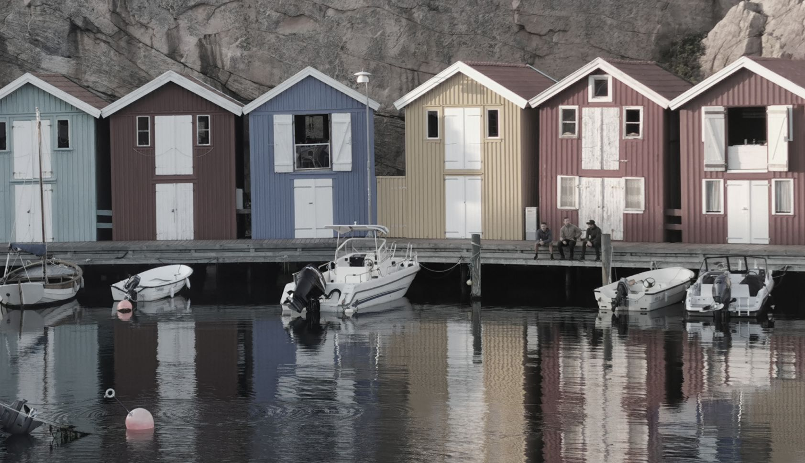
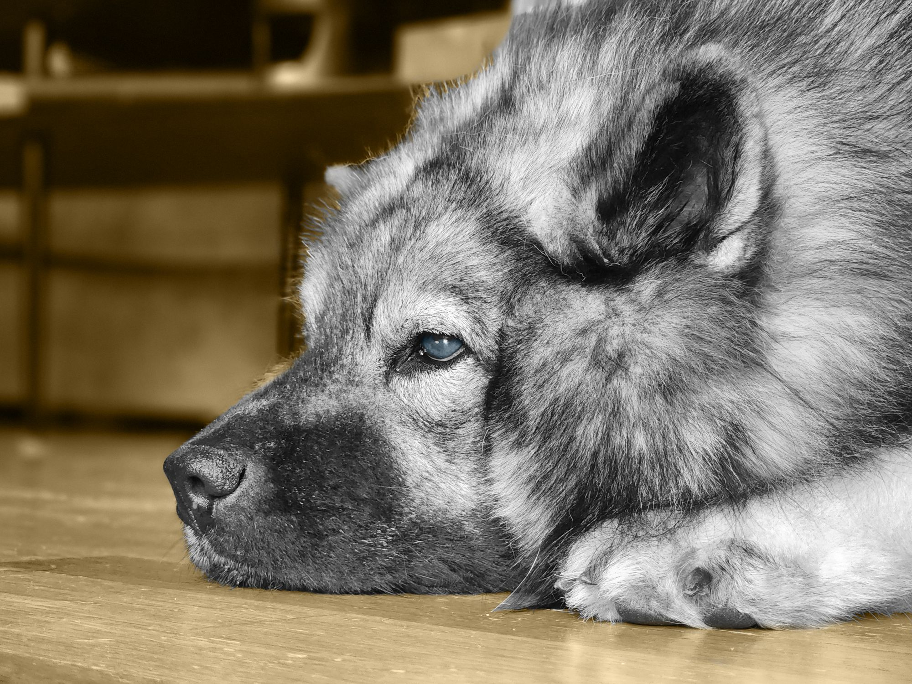

Start Sida

Galleri





Photopea & Figma
Syftet med den här uppgiften är att lära sig grunderna i digital bildbehandling och skapa en enhetlig bildserie som passar ihop med webbplatsens grafiska profil. Bilderna har bland annat färgkorrigerats, ljusbalanserats och retuscherats.
Använd program:Jag har använt Photopea för att redigera fotografierna och Figma för att skapa vektorlogotypen.